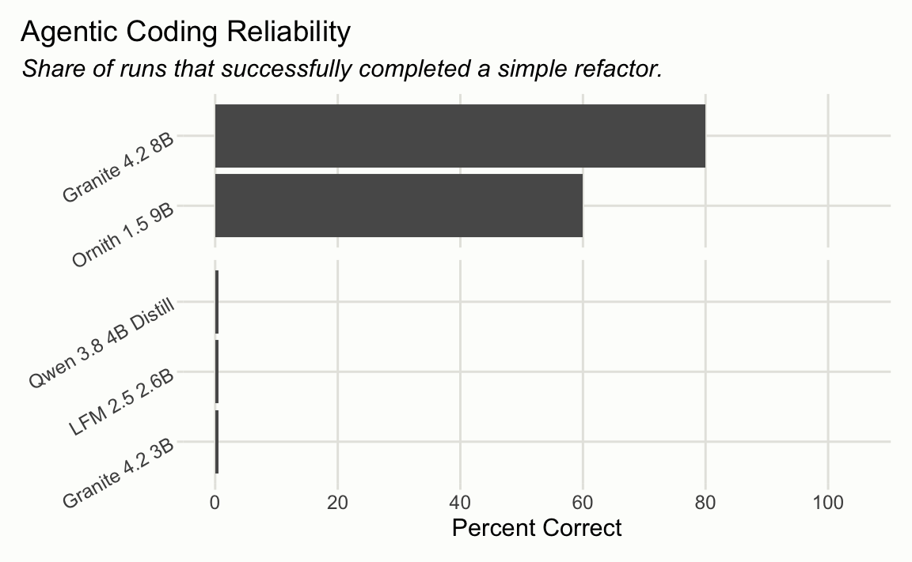

At the end of last year, I authored an LLM evaluation that measured a model’s ability to do a simple agentic coding task. The model is placed inside of a typical coding agent harness and asked to carry out a basic refactor that requires the model to make a few tool calls to navigate a repository and make the change.
At the time, no model that I could run comfortably on my laptop at 8-bit could carry out the task:1
A few months later, I was hearing good things about Gemma 4 26B A4B and Qwen 3.5 35B A3B, so I took them for a spin. There had been a step change in what was possible on my laptop:

I recently wondered how low the floor now was for models that could do basic agentic coding. Could an 8B or 4B model do this refactoring task reliably? I ran the eval again today on 5 models in this class that have popped off on Hacker News in the last 3 months:

4B is still a no-go, but the ~8B models Granite 4.2 8B and Ornith 1.5 9B were both almost there, completing the task successfully 8 and 6 times out of 10, respectively! Amazingly, Granite 4.2 8B’s score matches that of GPT 4.1. That said, the prefill for the ~8B models felt noticeably slower; chewing through the prompt and tool descriptions in this coding agent harness took long enough to probably push me away from using that setup regularly, even if it reliably completed the refactor.
Even though the 4B models I chose weren’t able to make this happen, I’m open to the idea that models that take up the same memory footprint as a 4B model at 4-bit quantization could do some agentic coding tasks, either via more aggressive quantizations of larger models and/or using agent harnesses that are deliberately designed for token-efficiency.
Run annotations from Codex
The commands and file paths below are relative to a checkout of helperbench. All runs were Q4_K_M.
Ornith 1.5 9B
mkdir -p /tmp/helperbench-small-models
curl -L --fail \
https://huggingface.co/ornith-ai/Ornith-1.5-9B-GGUF/resolve/main/Ornith-1.5-9B-Q4_K_M.gguf \
-o /tmp/helperbench-small-models/Ornith-1.5-9B-Q4_K_M.gguf
ollama create ornith-1.5-9b-q4 \
-f inst/runs/models/ornith-1.5-9b.Modelfile
Rscript inst/runs/scripts/ornith_1_5_9b.RThe server produced identical reasoning and answers for low, medium, and high thinking on the calibration riddle. This run requested medium thinking, but the level was not empirically controllable. Ornith passed six of ten samples: two failures left the target unchanged and two made changes that failed the unit tests. It made 270 tool calls over 2 hours and 18 minutes. Many intermediate edits were badly broken or compounded duplicate code, but the model often kept testing and eventually repaired them before stopping.
Granite 4.2 8B
ollama pull granite4.2:8b
ollama create granite4.2:8b-helperbench \
-f inst/runs/models/granite-4.2-8b.Modelfile
Rscript inst/runs/scripts/granite_4_2_8b.RThe initial helperbench request was 11,195 tokens, closely matching counts from both IBM’s original tokenizer and the Ollama GGUF tokenizer. Medium and high thinking produced identical calibration responses, while low thinking was much shorter.
An initial run requested medium thinking, which behaved like Granite’s full/default thinking mode. (I had to stop it early because the generation of so many output tokens caused my computer to draw so much power that I literally couldn’t keep it charged.) Rerunning with low thinking produced eight passes in ten samples and took 2 hours and 10 minutes. One failure made no change to the target file. The other stayed in the agent loop for 58.9 minutes, filled the context window, timed out, and left the target file unparsable. The first request processed at 307 input tokens per second and generated at 32 tokens per second, but near the context limit those rates fell to roughly 45–75 and 14–21 tokens per second, respectively.
Granite 4.2 3B
ollama pull granite4.2:3b
ollama create granite4.2:3b-helperbench \
-f inst/runs/models/granite-4.2-3b.Modelfile
Rscript inst/runs/scripts/granite_4_2_3b.RThe model used the same 65,536-token context window to leave room for long tool conversations. Medium and high thinking both exhausted the 4,096-token output allowance without reaching an answer on a calibration riddle, so this run used low thinking.
Granite 3B passed none of the ten samples. It made 68 tool calls, but every call was read-only or updated its plan; it never invoked an editing tool. In most samples it nevertheless claimed that it had applied the refactor. The full run took 27 minutes.
LFM 2.5 2.6B
mkdir -p /tmp/helperbench-small-models
curl -L --fail \
https://huggingface.co/LiquidAI/LFM2.5-2.6B-GGUF/resolve/main/LFM2.5-2.6B-Q4_K_M.gguf \
-o /tmp/helperbench-small-models/LFM2.5-2.6B-Q4_K_M.gguf
ollama create lfm2.5-2.6b-q4 \
-f inst/runs/models/lfm-2.5-2.6b.Modelfile
Rscript inst/runs/scripts/lfm_2_5_2_6b.RThe server returned exactly the same reasoning and answer at every requested thinking level. This run requested medium thinking, but I don’t think it actually kicked in. Nine of ten samples called tools, making 165 calls in total, but none changed the target file. LFM repeatedly confused R/tool-fetch_skill.R with R/tool-fetch-skill.R, passed malformed arguments to search and write tools, and sometimes created duplicated or invalid R files. Two samples stayed in the agent loop for 18 and 21 minutes; the full run took 69 minutes.
Qwen 3.8 4B Distill
mkdir -p /tmp/helperbench-small-models
curl -L --fail \
https://huggingface.co/empero-ai/Qwen3.8-4B-Distill-GGUF/resolve/main/Qwen3.8-4B-Q4_K_M.gguf \
-o /tmp/helperbench-small-models/Qwen3.8-4B-Q4_K_M.gguf
ollama create qwen3.8-4b-distill-q4 \
-f inst/runs/models/qwen-3.8-4b-distill.Modelfile
Rscript inst/runs/scripts/qwen_3_8_4b_distill.RWith thinking enabled, the model exhausted the 4,096-token output allowance on a short calibration riddle. The evaluation therefore ran with thinking disabled. In all ten samples, Qwen responded directly with a proposed R helper without making any tool calls. It never inspected or changed the repository; several of the proposed snippets were also invalid R or changed the behavior of the original code.
Footnotes
Frustratingly, we have not had a Haiku release since then.↩︎